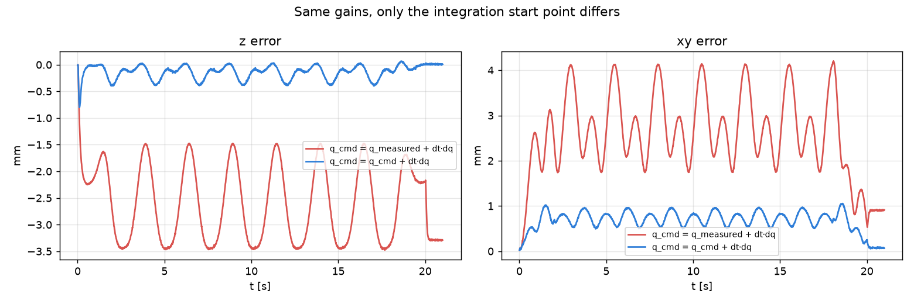
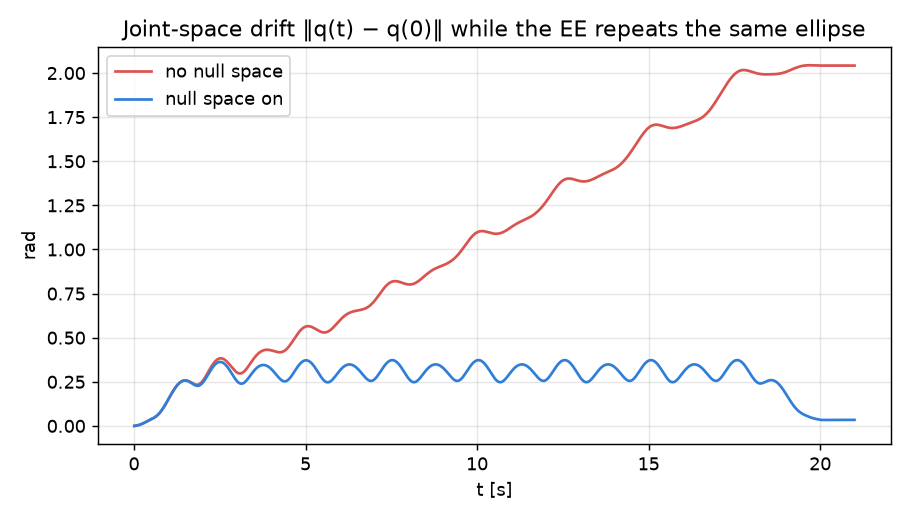

2026 · MEAM 5200 · University of Pennsylvania
Upright-Cup Mixing on a 7-DOF Panda7 自由度 Panda 机械臂端杯搅拌
A Franka Panda holds a cup and moves it along a horizontal ellipse while keeping it upright, so the ingredients mix without spilling. I led the controls for this stirring module in the course project, which ran live on real Panda arms at Penn's GRASP Lab. I then rebuilt the controller from scratch as an open simulation to find out exactly why each design choice mattered.
Franka Panda 机械臂端着杯子沿水平椭圆运动，同时保持杯身竖直，让食材混合而不洒出。课程项目中我负责这个搅拌模块的控制，最终在宾大 GRASP 实验室的真实 Panda 机械臂上现场演示。之后我从零把控制器重写成一个开源仿真，弄清每个设计选择到底为什么有效。
On the real robot真机演示
- A 100 Hz Cartesian controller using Jacobian pseudo-inverse velocity mapping and null-space joint centering, following an elliptical stir path with the tool orientation held fixed.
- 100 Hz 笛卡尔空间控制器：雅可比伪逆速度映射 + 零空间关节回中，在保持工具姿态不变的前提下跟踪椭圆搅拌轨迹。
- Under a 200 g load the cup sagged 15–20 mm. Integral compensation brought that under 2 mm; velocity limits and a low-pass filter removed the vibration of the earlier replay approach.
- 200 g 负载下杯子下沉 15–20 mm，积分补偿把它压到 2 mm 以内；速度限幅和低通滤波消除了之前离线回放方案的振动。
- Trajectory commands and live visualization in ROS/RViz. Demo day finished with no spills.
- 用 ROS/RViz 实现轨迹指令和实时可视化。演示日全程零洒漏。
Interactive 3D replay: course controller vs. rebuild可交互 3D 回放：课程版控制器 vs 重写版
The course controller (v3) and my rebuild (v4) run side by side on the same simulated arm and load. Drag to rotate, scroll to zoom.
课程版控制器（v3）和我的重写版（v4）在同一个仿真机械臂、同样负载下并排运行。拖动旋转视角，滚轮缩放。
Replay of the Python simulation (simplified plant, not Gazebo or the real robot). Needs an internet connection to load.
回放来自 Python 仿真（简化模型，不是 Gazebo，也不是真机），需要联网加载。
How the controller works控制器原理
Every 10 ms the controller reads the joint angles, works out the joint velocities that move the cup toward its planned position, and sends a new position command.
每 10 ms，控制器读取关节角，算出让杯子朝规划位置运动的关节速度，再发出新的位置指令。
ellipse: x_des(t), v_des(t)
q (measured) ─► FK ─► x, R
v = v_des + K (x_des − x) task-space feedback
ω = k_r · e_R(R_home, R) keep the cup upright
dq = J⁺ [v; ω] + (I − J⁺J) · k_n (q_home − q)
damped least squares null space: stop joint drift
scale dq to the joint velocity limits
q_cmd ← q_cmd + dt · dq ─► robot ─► next tick
Results (simulation)结果（仿真）
| Controller控制器 | xy RMS error水平跟踪误差 | Mean sag (z)平均下沉 | Peak horiz. accel峰值水平加速度 |
|---|---|---|---|
| v1: P-only, integrate from measured qv1：纯比例控制，从实测关节角积分 | 12.3 mm | 16.2 mm | 2.6 m/s² |
| v3: course final controllerv3：课程最终版 | 13.7 mm | 0.8 mm | 2.7 m/s² |
| v4: rebuildv4：重写版 | 0.7 mm | 0.15 mm | 0.85 m/s² |
Same simulated plant and load for every run. Peak horizontal acceleration is the proxy for spill risk.
所有运行使用同一仿真模型和负载。峰值水平加速度用来近似衡量洒出风险。
What I learned关键发现
1. Integrate from the command, not the measurement1. 从上一次指令积分，而不是从实测值积分
Restarting the command from the measured pose every tick leaves the joint controller almost no position error to push against, so the load makes the arm sag. That is why the course version needed a large z-gain and an extra integrator. Integrating from the previous command lets the correction build up in the command itself, which removes the sag with plain P gains.
每个周期都从实测位姿重新起算指令，关节控制器几乎没有位置误差可以"用力"，负载就会把机械臂压下去。这正是课程版需要很大的 z 增益和额外积分器的原因。改成从上一次指令积分后，修正量会累积在指令本身，只用比例增益就消除了下沉。

2. Null space stops joint drift2. 零空间控制阻止关节漂移
With 7 joints for a 6-D task, joints 1 and 7 can counter-rotate without moving the cup, and the pseudo-inverse lets them wander about 1.5 rad in 20 s. Pulling every joint back toward the start pose in the null space removes the drift without disturbing the cup.
7 个关节完成 6 维任务，关节 1 和关节 7 可以反向转动而不影响杯子，伪逆解会让它们在 20 秒内漂移约 1.5 rad。在零空间里把所有关节拉回初始姿态，就能消除漂移，又不干扰杯子运动。

3. Gains and filtering3. 增益与滤波
The course controller used low task gains and a low-pass filter that adds about 19 ms of lag. Reverting either one in the rebuild roughly triples the xy error. The arm stays far from a singularity on this path, so that was not the cause.
课程版用了较低的任务空间增益，以及一个带来约 19 ms 延迟的低通滤波器。在重写版里单独恢复其中任意一项，水平误差都会增加约三倍。这条轨迹离奇异位形很远，所以问题不在奇异性。
Limitations局限
- The v4 rebuild has only run in simulation. A ROS port to the course interface exists but has not been tested on hardware.
- v4 重写版只在仿真中运行过。已经移植到课程 ROS 接口，但还没上真机测试。
- The robot model is simplified (no full dynamics). It is calibrated only so that v1 sags 15–20 mm, as seen on the real robot, so trends are more reliable than exact numbers.
- 机器人模型是简化的（没有完整动力学），只按真机上观察到的 v1 下沉 15–20 mm 做了标定，因此趋势比具体数值更可信。